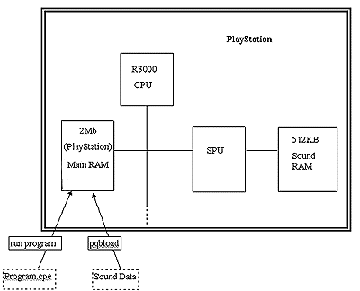
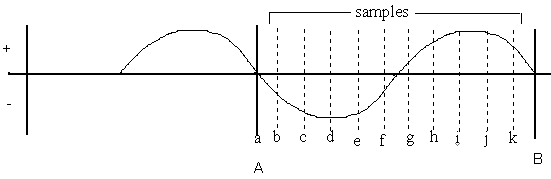
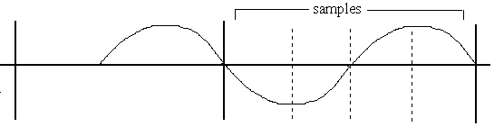
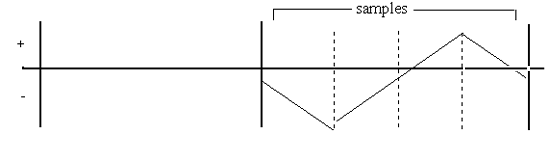
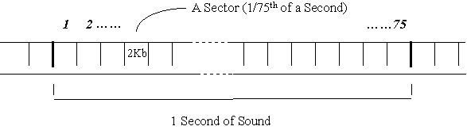
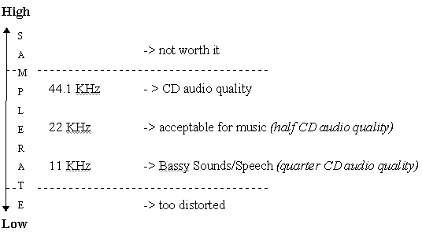
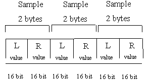
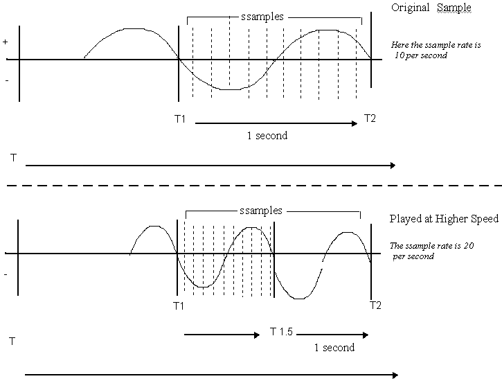
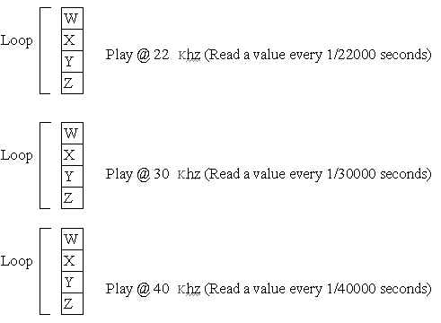

Running a program with sound usually requires more than one file: the executable and its associated sound files.
The SPU (Sound Processing Unit) which manages PlayStation sound has its own SPU/sound RAM of 512 KB. This is not accessible via your PC so files to be used by the SPU must first be loaded into main RAM so that your program can move them to the SPU RAM.

Figure 1: Loading a Sound Program and Data File into the PlayStation
Sound is a digitized for storage on a CD.
Taking a sound wave (figure 2), between the points A-B are a complete wave.

Figure 2: Digitizing a Sound Wave by Measuring its Amplitude at Discrete Points
Sound is digitized by measuring the amplitude of the wave at discrete intervals (a->k in figure 2) to get a list of values. In the simplified example above, this would be:
a = 0, b = -1, c = -2, d = -2.5, e = -2, f = -1, g = +0.5, h =+2, i = +2.5, j = +2.5, K= +2
The resulting digitized sound wave would be a list as follows:
0 | -1 | -2 | -2.5 | -2 | -1 | +0.5 | +2 | +2.5 |+2.5|+2
In reality the values can be anything between -32767 and +32767. Each value is called a 'sample' and the number of samples a second is the 'sample rate'. Normal CD (DA sound) is 44100 samples per second, expressed in Kilo Herz that is 44.1Khz.
A low sample rate will give a poorer sound quality as the recreated sound wave will not be very true to the original.

Figure 3: Low Sample Rate
The digitized sound from this is:
0 | -2 | 0 | +2
The recreated sound wave will be:

Figure 4: Sound Reproduction from a Low Sample Rate
Because the human ear can hear different sound timbres, some sound can be stored with a low sample rate - bass sounds or drums for example.
While data is physically stored on the CD in a spiral track, there can be between one and ninety nine conceptual 'tracks' on a PlayStation CD which are like individual songs on a normal audio CD (or vinyl record or magnetic cassette).
Each track is a certain number of minutes and seconds long in time. Each second of playtime is divided into 75 sectors. If a sector is used to store data, it can hold 2Kbytes (or 2048 bytes).
So, one second of CD must be 150Kb of data as:
1 (second) x 75 (sectors) x 2 (Kb) = 150 (Kb)

Figure 5: A Second of DA Sound has 75 Sectors
The PlayStation does have a dual speed CD ROM reader which can give continuous data transfer rate of twice the 150 Kb per second as well. (That is 300 kilobytes per second at dual speed.)
The important thing to remember here is that:
INCREASE in SAMPLING RATE = INCREASE in QUALITY + INCREASE in SIZE.
So there is a cost to higher quality, that is more memory use. It is important, then, to ensure you use the most appropriate sampling rate.
For ordinary CD (DA) tracks on the PlayStation, this is fixed at 44.1 Khz which gives sound at the highest quality that the human ear can detect. (According to Shannon's rule, in order to reproduce sound accurately, the sampling rate must be over twice the 15 - 20 Khz that is human hearing.)
For the other sorts of sound on the PlayStation (really SPU-ADPCM), the sampling rate is variable. To make things simple we can use multiples of the 44.1Khz to get some idea of the achievable quality (see Figure 7 - yes, I know that there is no number 6).
Figure 7: Sampling Rates and their Sound Quality
The first two types of PlayStation sound listed here (DA and XA-ADPCM) are played directly in real time by the CD sub-system. The third, SPU-ADPCM, is a data type processed by the PlayStation's SPU.
As the PlayStation executable Program lies in track 1 of a PlayStation CD (holding data like pictures, 3D models and Sound SPU RAM data), you can store simple DA in later tracks on the PlayStation CD.
DA goes straight to playback, just like a normal CD player.
DA plays at 44.1 Khz. (To reiterate: there are 44,100 samples - in the form of numerical values - every second. This gives the best quality that the human ear can detect.) Each sample requires a 16 bit memory space to be stored being a value of between -32767 and +32767 (as described in How a CD Stores Sound, above).
As DA can be stereo, there is a left ('L') and right ('R') channel and a sample value for each, so:

Figure 8: Stereo DA
This fits into the space available for one second of space on a CD (as described in CD Tracks, above).
For each of the 44,100 samples in a second, a 16 bit storage space is used for the left and a 16 bit for the right (16 bits = 2 bytes).
2 (bytes) x 2 (channels) x 44100 (number of samples) = 176400 bytes
DA data on CD is not error corrected. (If one of the sample values on the CD is read badly, it is not important as it represents only 1/44100 of a second of bad sound - not really likely to be a problem). So there is some additional space is available for DA: a DA audio sector is 2352 bytes per sector, rather than 2048 in XA Data Form 1.
So, in one DA sector there (2352 bytes) there are 1176 samples of 16 bits (2 bytes):
2352 (bytes space) / 2 (bytes per ) = 1176 samples per sector.
If we remember that there are 75 sectors a second and 2 channels (left and right) we get the magic number 44,1000 samples per second:
1176 (samples per sector) x 75 (samples per second) = 882000 samples a second) / 2 (channels) = 44,1000 (samples per second)
SPU - ADPCM is Sony proprietary compressed sound. Unlike DA and XA-ADPCM, this sound is loaded from the CD into SPU sound) RAM. Pieces of sound for use by the SPU RAM are called sound samples (confusingly this is the same name as the individual value used in storing sound digitally - so in this section, from here on the individual values will be referred to as 'ssamples' to ease confusion).
A sample can be held in the SPU RAM and replayed in loop, but at each play its pitch can change, simply because the SPU can play a sample at any speed.
So the sound of a car revving in Ridge Racer is that same sample in a loop but being played at a faster and faster speed to give a higher and higher pitch. This change in pitch is called a 'pitch bend'.
This is (again) simple physics :

Figure 13: Sample Played Back at Higher Speed to Increase Pitch
Here, the original samples are all played in half a second, giving a shorter sound wave and therefore higher pitch.
Or to give a simpler example: when you used to play your vinyl LPs of U2 (33 RPM) at single speed (45 RPM), U2's Bono had a high pitched voice like he had been on the helium.
Similar to XA-ADPCM, an SPU-ADPCM sound sample takes up approximately one quarter of the size of DA - about 4 bits per sample.
However, an SPU-ADPCM sample recorded and replayed at 44.1Khz will be of a poorer quality than a normal DA track (recorded and played at the same speed). This is because the compression loses some data - this is said to be 'lossy'.
So a sample recorded at 22 Khz can be looped at different speeds:

Figure 14: SPU-ADPCM Variable Playback
In figure 14: Loop 3 will be over sooner than 2 which will be over sooner than 1.....
Loop 1 takes 4 x 1/22000 of a second
Loop 2 takes 4 x 1/30000 of a second
Loop 3 takes 4 x 1/40000 of a second
The VAG file format is a proprietary file format, based upon the AD-PCM compression technique. This provides a compression ratio of around 4:1. Samples are converted into the VAG file format using the program AIFF2VAG on the PC (where it takes the form of a command-line DOS converter, and is provided free). AIFF is a standard file format for sound, and can be produced by most sample editing software. You can use samples of any ssample rate up to 48KhZ, so long as they are mono.
As well as the sample data itself, it is necessary to combine VAGS into one file, called a VAB, or Voice Bank file. VABs control the ADSR (attack, decay, sustain and release), or envelope of a sound, as well as specifying information about their tuning and other factors.
Samples should be edited before conversion into VAG format. For this a package such as Sound Designer II, Sound Forge or Cool Edit should be used. It is important that the sample starts and ends cleanly - that is, the sample's volume at the start and end should be zero. This is because the TV speaker will move in and out depending upon the pattern of the wave-form being played back. If, when a sample is played, its amplitude is not zero at the start, the speaker is rapidly moved into a new position, which results in an unpleasant sounding 'click' sound, and can damage the speaker. This can be avoided by fading the sample in and out before conversion (only over a few milliseconds is fine).
For certain sounds, particularly certain musical sounds such as drum beats or strings, it is often desirable to 'loop' the sound. This involves the setting of loop start and end points in the sample. When the sample is playing back, as it encounters the loop end point, playback will move back to the loop start point. This will continue until the sample is stopped.
Again, to avoid the speaker 'clicking' the amplitude at the loop start and end must be identical. This can usually be achieved in a sample editing program with a 'cross-fade' function.
Due to the ADPCM compression, loop points must be placed on 28 ssample boundaries. That is, they can exist only on 1 in every 28 ssample positions. Thus, a loop point can be placed at ssample 0, ssample 28, 56 and so on. When looping a sample therefore, it is advisable to loop it manually (so it sounds about right), then adjust the loop points until they are exactly divisible by 28. The loop can then be cross-faded (over a few samples) to make sure it sounds OK.
As well as playing individual sound samples for sound effects or speech, LIBSND allows the playback of MIDI sequences. MIDI sequences are a very efficient way of storing sound, as they consist of 'note-on' and 'note-off' messages which are used to trigger individual sound samples. In this way, a very long piece of music could be played using just a few instrument sound samples, thus using very little sound RAM.
MIDI sequences are produced using a sequencing package, such as Cubase, Vision or Notator.
It is advisable to produce samples and music on an external sampler, such as a Digidesign SampleCell II (the system used in house at SCEE on a Macintosh) or an Akai S1100. Once the music has been produced, it can then be converted into PlayStation format for testing on a development system.
MIDI files should be saved in Standard MIDI format. They should not contain any after-touch, and pitch bend should be kept minimal (continuous controllers produce large amounts of data, which can cause playback to slow down on PlayStation).
PlayStation can apply reverb and echo to sounds. Reverb is an algorithm which simulates the reverberant effect of making a sound in a room or hall. It is useful for making sounds 'bigger' and more impressive. Reverb can also be applied to CD audio and XA-ADPCM audio. The most well-known example of this is moving through the tunnel in Ridge Racer - in the tunnel, reverb effects are applied to all sounds in the game.
Reverb uses a buffer in sound RAM. Depending upon the size of the reverb (i.e. the size of the room you are simulating), more or less memory is required. Large reverbs tend to use up too much sound RAM to be very useful.